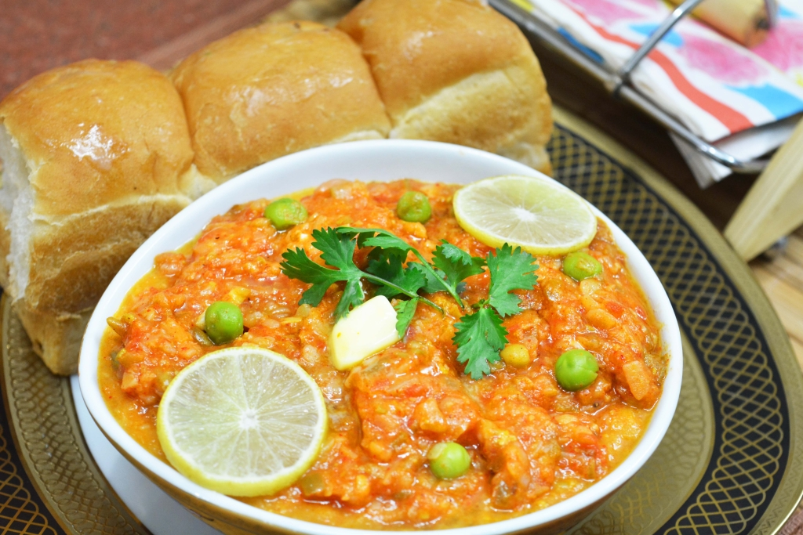

Pav Bhaji
Pav bhaji has many variations in ingredients and garnishes, but is essentially a spiced mixture of mashed vegetables in a thick gravy, usually cooked on a flat griddle (tava) and served hot with a soft white bread roll.
The dish originated in the 1850s as a fast lunchtime dish for textile mill workers in Mumbai. Pav bhaji was later served at restaurants throughout the city. Pav bhaji is now offered at outlets from simple hand carts to formal restaurants in India and abroad.
how would you like it?
Ingredients of Pav Bhaji
| Ingredient | Quantity |
|---|---|
| medium mashed,boiled potato | 4 |
| medium chopped onion | 2 |
| chopped cauliflower | 1/2 cup |
| shelled,blanched peas | 1 cup |
| refined oil | 3 tablespoon |
| salt | 3 pinch |
| pav | 8 |
| garlic paste | 2 teaspoon |
| 1/4 cup green beans | 1/4 cup |
| medium chopped tomato | 4 |
| chopped,de seeded capsicum | 1 |
| chopped carrot | 1/4 cup |
| ginger paste | 1/2 tablespoon |
| chopped green chilli | 2 |
| melted butter | 25 gm |
| medium lemon wedges | 1 |
| pav bhaji masala | 2 teaspoon |
Method of preparation
- big>Blanch the peas, cauliflower florets, carrots and beans. Alternately, you can also boil them with a little water in the pressure cooker. Drain and mash coarsely. Heat oil in a pan and add three fourth quantity of onions. Saute till light golden in colour. Add green chillies and ginger-garlic paste. Stir-fry for half a minute. Add pav bhaji masala and chopped capsicum and stir fry for a minute.
- Ensure that you have finely chopped the tomatoes. If they have tough skin, chop them after removing the skin or grate them. Add tomatoes, salt and cook on medium heat for three to four minutes, stirring continuously or till oil separates from the masala. Add mashed peas, cauliflower, potatoes and 2 cups of water. Bring it to boil and simmer for ten minutes, pressing with back of the spoon a few times, till all the vegetables are completely mashed and blended together.
- Heat half of the butter in a thick-bottomed pan or a tawa. Slice pav horizontally into two and pan fry in butter for half a minute, pressing two or three times or till pav is crisp and light brown. Garnish the bhaji with chopped coriander leaves, remaining butter and serve hot with pav accompanied with remaining chopped onion and lemon wedges.
- You can add finely chopped onions and green chillies to the bhaji. If you love to have your bhaji more spicy, add an extra teaspoon of red chilli powder while cooking the bhaji. You can also serve this bhaji with chapati or paratha or with plain bread.